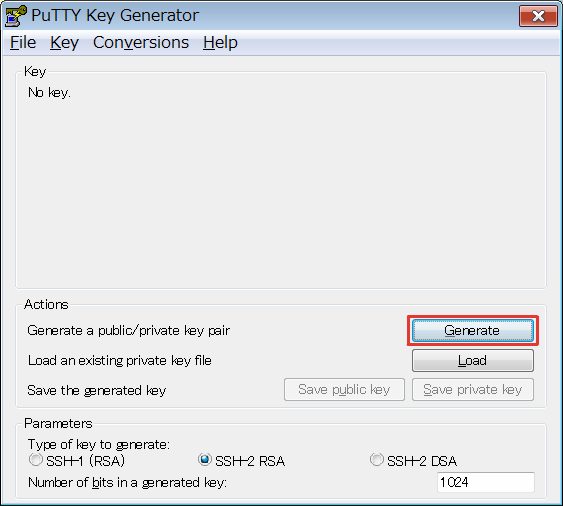
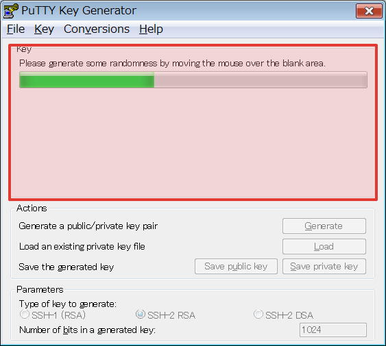
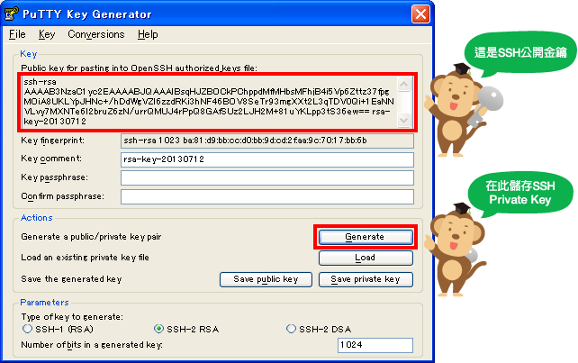
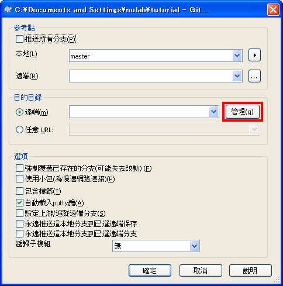
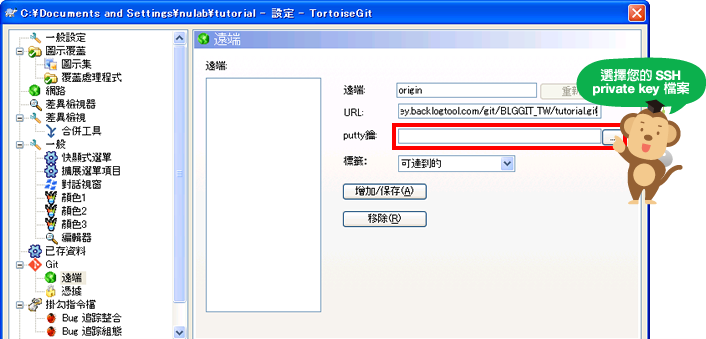
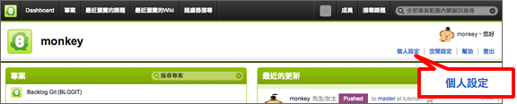
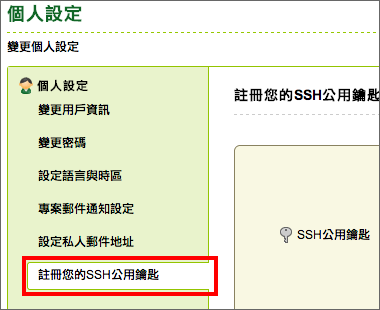
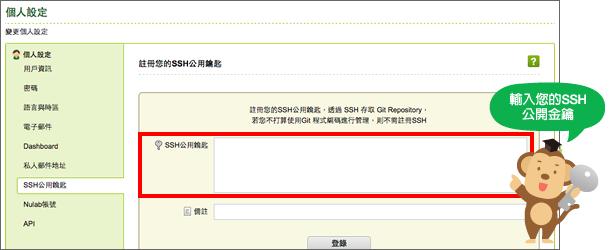

設定SSH連接
設定SSH連接 (Windows)
從『開始』界面的『程式集』中開啟『 TortoiseGit 』的項目，啟動Puttygen。

點擊Generate 按鈕，在進度條進行到最右邊位置以前，請在顯示為紅色框框的範圍內移動滑鼠。

金鑰產生後，會切換到以下的畫面。點擊 『 Save Private Key 』按鈕，儲存 ppk 檔案。

顯示在 Public key 的文字就是公開金鑰的內容。點擊 『Load 』按鈕讀取 ppk 檔案可以再度顯示公開金鑰。
Push 時設定SSH連線，在右鍵選單中點擊『 TortoiseGit』 > 『push』，將會顯示以下畫面，請按『管理』按鈕。

push，將會顯示下一個畫面，請按管理按鈕。" />顯示以下畫面後，遠端為 origin，在『URL』 輸入 SSH 的路徑，在『Putty鑰』輸入剛才儲存的 ppk 檔案位置，點選 『增加/保存』 按鈕。在遠端目錄裡會增加origin，接著按『確認』按鈕。

設定SSH連接（Mac）
在應用程式目錄內開啟終端機，執行以下命令。
$ ssh-keygen
如果沒有要設定驗證密碼，請不要輸入任何文字，直接按『 Enter』 鍵即可。
如果沒有設定驗證密碼，請不要輸入任何文字直接輸入 Enter 鍵。
Generating public/private rsa key pair. Enter file in which to save the key (/Users/eguchi/.ssh/id_rsa): <輸入 Enter 鍵> Created directory '/Users/eguchi/.ssh'. Enter passphrase (empty for no passphrase): <輸入驗證密碼> Enter same passphrase again: <再輸入一次同樣的驗證密碼> Your identification has been saved in /Users/eguchi/.ssh/id_rsa. Your public key has been saved in /Users/eguchi/.ssh/id_rsa.pub. The key fingerprint is: 57:15:3c:ca:f2:dc:27:6d:c2:9a:88:d0:70:cf:8d:31 eguchi@eguchi-no-MacBook-Air.local The key's randomart image is: +--[ RSA 2048]----+ | .o. | | .o | | ... . | | . . E.o | | +So.O o . | | . ..+ + = +| | . . . o = | | . . o | | | +-----------------+
執行以下命令就可以確認產生SSH連線所需要公開金鑰的內容。
$ cat ~/.ssh/id_rsa.pub
輸出實例
ssh-rsa AAAAB3NzaC1yc2EAAAADAQABAAABAQDkkJvxyDVh9a+zH1f7ZQq/JEI79dVjDSG 4RzttQwfK+sgWEr0aAgfnxdxQeDKxIxqI1SwyTY8oCcWzvpORuPqwbc7UWWPcCvbQ3jlEdN 5jvwKM82hincEWwI3wzcnVg2Mn8dH86b5m6REDzwRgozQ3lqrgwGVlTvkHDFs6H0b/1PSrM XGppOP/QXGEVhZ6Hy4m3b1wMjjrbYwmWIeYklgoGHyrldhAaDYc33y7aUcRyFyq5DubtsLn 2oj4K+1q36iviCHxCOri0FDmn2dzylRCI4S+A2/P7Y7rVfdT+8OWYKCBUs8lfjujghEtejq Qmj9ikyGTEAW1zQCN7hVwYdjL hoge@hoge.local
接著在遠端數據庫裡設定公開金鑰。
設定SSH連接（主控台）
請執行以下命令。
$ ssh-keygen
接著會顯示以下的內容，在必要的地方輸入想要設定的驗證密碼，並按 『Enter 』鍵確認。
如果沒有要設定驗證密碼，請不要輸入任何文字，直接輸入『 Enter』 鍵即可。
Generating public/private rsa key pair. Enter file in which to save the key (/Users/eguchi/.ssh/id_rsa): <輸入 Enter 鍵> Created directory '/Users/eguchi/.ssh'. Enter passphrase (empty for no passphrase): <輸入驗證密碼> Enter same passphrase again: <再輸入一次同樣的驗證密碼> Your identification has been saved in /Users/eguchi/.ssh/id_rsa. Your public key has been saved in /Users/eguchi/.ssh/id_rsa.pub. The key fingerprint is: 57:15:3c:ca:f2:dc:27:6d:c2:9a:88:d0:70:cf:8d:31 eguchi@eguchi-no-MacBook-Air.local The key's randomart image is: +--[ RSA 2048]----+ | .o. | | .o | | ... . | | . . E.o | | +So.O o . | | . ..+ + = +| | . . . o = | | . . o | | | +-----------------+
執行以下命令就可以確認產生SSH連線所需要公開金鑰的內容。
$ cat ~/.ssh/id_rsa.pub
輸出實例
ssh-rsa AAAAB3NzaC1yc2EAAAADAQABAAABAQDkkJvxyDVh9a+zH1f7ZQq/JEI79dVjDSG 4RzttQwfK+sgWEr0aAgfnxdxQeDKxIxqI1SwyTY8oCcWzvpORuPqwbc7UWWPcCvbQ3jlEdN 5jvwKM82hincEWwI3wzcnVg2Mn8dH86b5m6REDzwRgozQ3lqrgwGVlTvkHDFs6H0b/1PSrM XGppOP/QXGEVhZ6Hy4m3b1wMjjrbYwmWIeYklgoGHyrldhAaDYc33y7aUcRyFyq5DubtsLn 2oj4K+1q36iviCHxCOri0FDmn2dzylRCI4S+A2/P7Y7rVfdT+8OWYKCBUs8lfjujghEtejq Qmj9ikyGTEAW1zQCN7hVwYdjL hoge@hoge.local
接著在遠端數據庫裡設定公開金鑰。
在貝格樂設定SSH公開金鑰
用戶登錄貝格樂後，請點選『 個人設定』。

在「個人設定」頁面，點選『 註冊您的SSH公用鑰匙』。

將SSH公開金鑰的內容複製貼上至編輯區，接著點擊『 登錄』按鈕。
